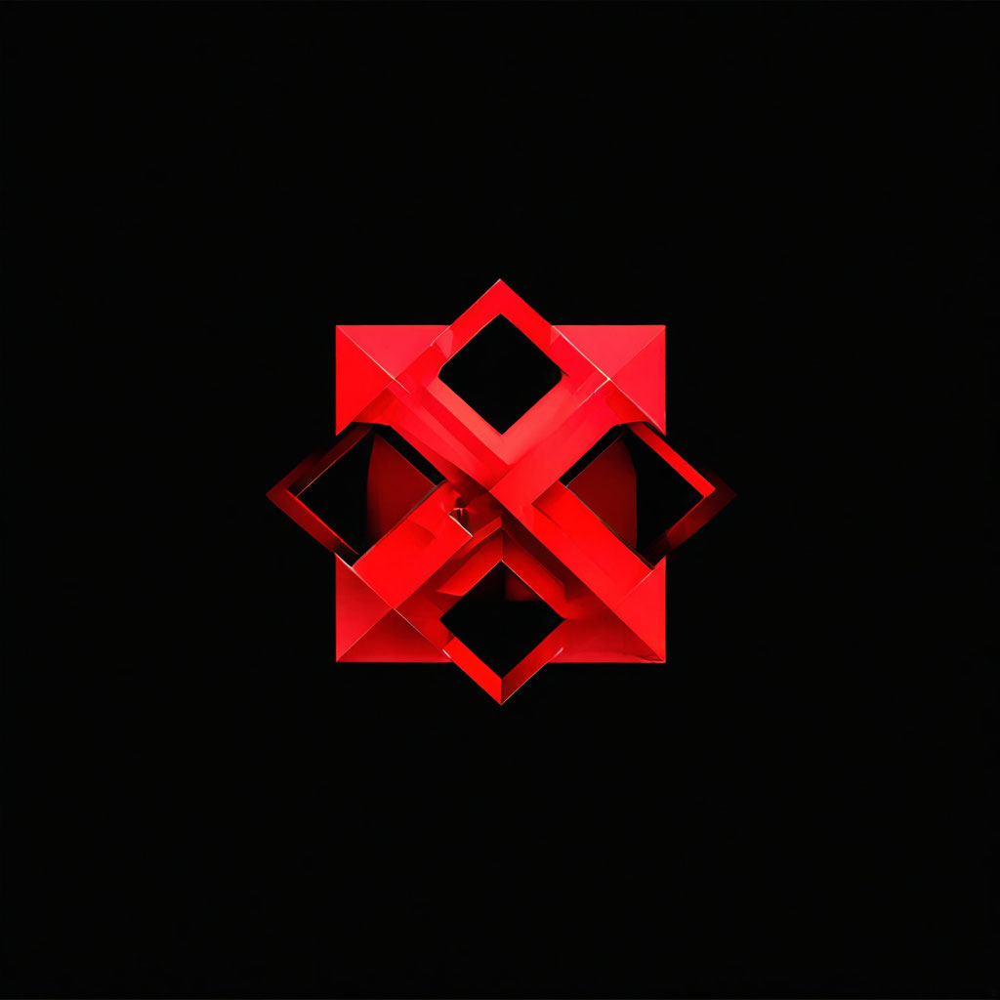

git clone https://github.com/igantoniuk-dh/pro-skin.git
cd pro-skin
npm i
npm run migration:run
npm run build
npm run start
с некорректно заданными переменными окружения приложение не запустится
npm run test:e2e
заданые 2 строгих правила:
Для просмотра диаграмм рекомендуется установить расширение для vscode или аналогичное для jbrains IDE
также можно использовать mermaid online
swagger,по умолчанию, запускается в dev режиме на порту 3005
документация typedoc может быть просмотрена через live server